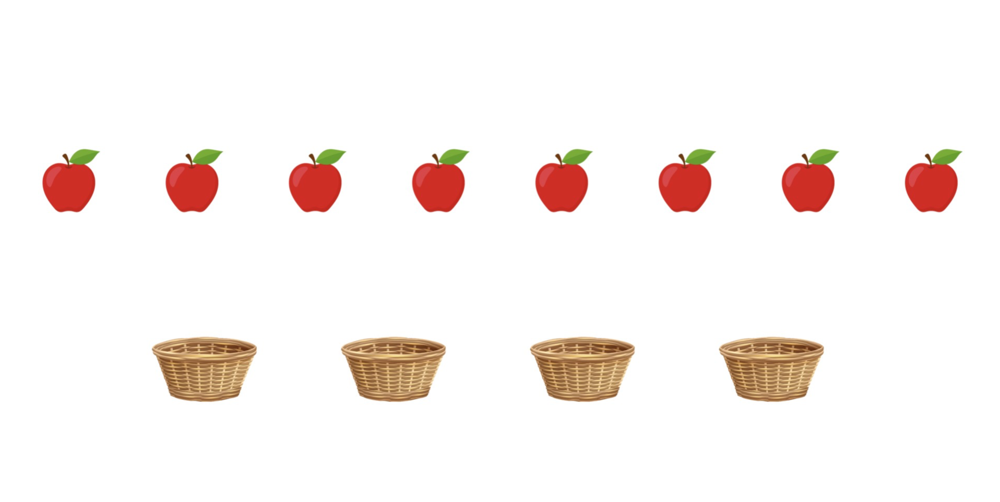

Делимость и остатки

В целочисленной арифметике деление отвечает на два вопроса:
- сколько полных групп получилось;
- сколько объектов осталось после деления на группы.
В этой главе целочисленное деление обозначаем символом \(/\), а остаток от деления — символом \(\%\).
В корзине \(27\) яблок. Их делят поровну между \(7\) школьниками.
Сколько целых яблок достанется каждому школьнику? Сколько яблок останется в корзине?
\(27 / 7 = 3\), значит каждому достанется по \(3\) яблока.
\(27 \% 7 = 6\), значит в корзине останется \(6\) яблок.
Проверка: \(27 = 7 \cdot 3 + 6\).
Основная модель
Пусть:
- \(n\) — делимое;
- \(k\) — делитель, причем \(k > 0\);
- \(q\) — целочисленное частное;
- \(r\) — остаток.
Для целых чисел верны записи:
- \(n / k = q\);
- \(n \% k = r\);
- \(n = k \cdot q + r\);
- \(0 \le r < k\).
Смысл формулы \(n = k \cdot q + r\): общее количество равно числу полных групп плюс остаток.
Короткая проверка: \(25 / 7 = 3\), \(25 \% 7 = 4\), значит \(25 = 7 \cdot 3 + 4\).
Когда число делится без остатка
Число \(n\) делится на \(k\) без остатка тогда и только тогда, когда \(n \% k = 0\).
Примеры:
- \(35 \% 7 = 0\), значит \(35\) делится на \(7\);
- \(38 \% 7 = 3\), значит \(38\) на \(7\) без остатка не делится.
Именно поэтому числа с остатком \(0\) называют кратными делителю.
Что видно по таблице при делении на \(7\)
Выпишем частное и остаток для \(n\) от \(0\) до \(21\).
| \(n\) | \(k\) | \(n / k\) | \(n \% k\) |
|---|---|---|---|
| 0 | 7 | 0 | 0 |
| 1 | 7 | 0 | 1 |
| 2 | 7 | 0 | 2 |
| 3 | 7 | 0 | 3 |
| 4 | 7 | 0 | 4 |
| 5 | 7 | 0 | 5 |
| 6 | 7 | 0 | 6 |
| 7 | 7 | 1 | 0 |
| 8 | 7 | 1 | 1 |
| 9 | 7 | 1 | 2 |
| 10 | 7 | 1 | 3 |
| 11 | 7 | 1 | 4 |
| 12 | 7 | 1 | 5 |
| 13 | 7 | 1 | 6 |
| 14 | 7 | 2 | 0 |
| 15 | 7 | 2 | 1 |
| 16 | 7 | 2 | 2 |
| 17 | 7 | 2 | 3 |
| 18 | 7 | 2 | 4 |
| 19 | 7 | 2 | 5 |
| 20 | 7 | 2 | 6 |
| 21 | 7 | 3 | 0 |
По таблице видно три важных факта:
- остатки идут по кругу: \(0, 1, 2, 3, 4, 5, 6\), затем цикл повторяется;
- частное увеличивается на \(1\), когда доходим до очередного числа, кратного \(7\);
- в точках \(0\), \(7\), \(14\), \(21\) остаток равен \(0\).
То же наблюдение в общем виде:
При делении на \(7\) возможны только остатки
Остатка \(7\) быть не может: это уже еще одна полная группа по \(7\), то есть остаток должен стать \(0\), а частное увеличится на \(1\).
Когда округлять вниз, а когда вверх
Если задача спрашивает, сколько полных групп получилось, то подходит \(n / k\): остаток просто отбрасывается.
Пример: \(25 / 7 = 3\). Значит, из \(25\) яблок можно сделать только \(3\) полные группы по \(7\) яблок.
Если задача спрашивает, сколько групп нужно, чтобы уместить всё, то при ненулевом остатке нужна еще одна группа.
У Маши \(33\) шарика, коробка вмещает \(6\) шариков. Сколько коробок нужно?
\(33 / 6 = 5\), но в пяти коробках помещается только \(30\) шариков.
Остаток \(33 \% 6 = 3\), значит нужна еще одна коробка.
Ответ: \(6\) коробок.
Общее правило:
- если \(n \% k = 0\), то ответ равен \(n / k\);
- если \(n \% k \ne 0\), то ответ равен \(n / k + 1\).
То же самое одной формулой:
Короткая проверка:
- \((36 + 5) / 6 = 41 / 6 = 6\);
- \((33 + 5) / 6 = 38 / 6 = 6\).
Быстрый выбор формулы: «сколько поместится полностью» -> \(n / k\), «сколько нужно, чтобы поместить всё» -> \((n + k - 1) / k\).
Как извлекать цифры числа
Для десятичной записи особенно важны два действия:
- \(n \% 10\) дает последнюю цифру числа;
- \(n / 10\) отбрасывает последнюю цифру.
Поэтому цифру любого разряда можно получить по схеме
где \(p = 0\) для единиц, \(p = 1\) для десятков, \(p = 2\) для сотен и так далее.
Разберем число \(1453\):
- единицы: \(1453 \% 10 = 3\);
- десятки: \(1453 / 10 \% 10 = 145 \% 10 = 5\);
- сотни: \(1453 / 100 \% 10 = 14 \% 10 = 4\);
- тысячи: \(1453 / 1000 = 1\).
Короткая проверка на числе \(8072\):
- единицы: \(8072 \% 10 = 2\);
- десятки: \(8072 / 10 \% 10 = 7\);
- сотни: \(8072 / 100 \% 10 = 0\);
- тысячи: \(8072 / 1000 = 8\).
Остатки в циклических задачах
Если процесс повторяется по кругу, остаток показывает, где мы находимся внутри цикла.
Сутки содержат \(24 \cdot 60 = 1440\) минут. Если с начала суток прошло \(n\) минут, то
Пример 1: \(n = 1500\).
- \(1500 / 60 = 25\);
- \(25 \% 24 = 1\);
- \(1500 \% 60 = 0\).
Ответ: \(01{:}00\).
Пример 2: \(n = 2879\).
- \(2879 / 60 = 47\);
- \(47 \% 24 = 23\);
- \(2879 \% 60 = 59\).
Ответ: \(23{:}59\).
Пример 3: \(n = 10\ 000\ 000\).
- \(10\ 000\ 000 / 60 = 166666\);
- \(166666 \% 24 = 10\);
- \(10\ 000\ 000 \% 60 = 40\).
Ответ: \(10{:}40\).
В задачах на циклы удобно мыслить так: сначала делим на размер одного блока, потом берем остаток по длине цикла.
Задачи для тренировки
1. В коробке \(52\) конфеты. Их делят поровну между \(9\) детьми. Сколько конфет получит каждый и сколько останется?
Ответ
\(52 / 9 = 5\), \(52 \% 9 = 7\). Каждый получит по \(5\) конфет, останется \(7\).
2. При делении числа на \(6\) получили частное \(8\) и остаток \(5\). Найдите исходное число.
Ответ
По формуле \(n = k \cdot q + r\): \(n = 6 \cdot 8 + 5 = 53\).
3. Нужно упаковать \(47\) тетрадей в пачки по \(8\) штук. Сколько пачек потребуется?
Ответ
\(47 / 8 = 5\), остаток \(7\), значит нужна еще одна пачка. Ответ: \(6\).
4. Найдите цифру десятков и цифру сотен числа \(9084\).
Ответ
Десятки: \(9084 / 10 \% 10 = 8\). Сотни: \(9084 / 100 \% 10 = 0\).
5. С начала суток прошло \(3500\) минут. Что покажут электронные часы?
Ответ
\(3500 / 60 = 58\), \(58 \% 24 = 10\), \(3500 \% 60 = 20\). Ответ: \(10{:}20\).
6. Объясните, почему при делении на \(9\) остаток \(9\) невозможен.
Ответ
Остаток всегда меньше делителя. Если получилось \(9\), это уже еще одна полная группа по \(9\), значит остаток должен стать \(0\), а частное увеличится на \(1\).
Главная самопроверка после деления: если подставить найденные \(q\) и \(r\) в формулу \(n = k \cdot q + r\), должно получиться исходное число.